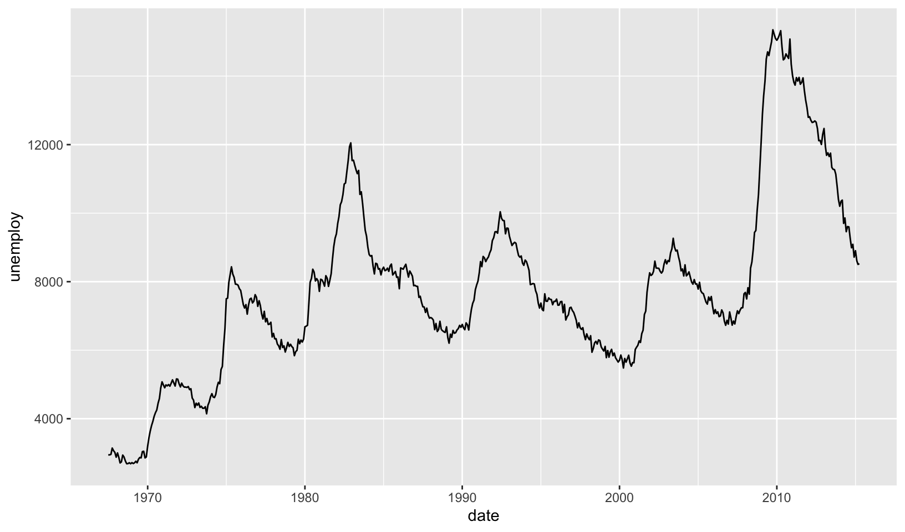
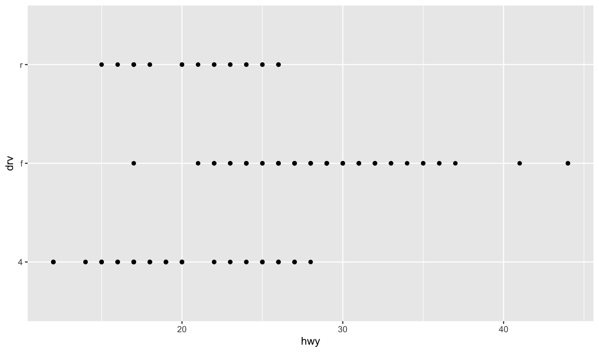
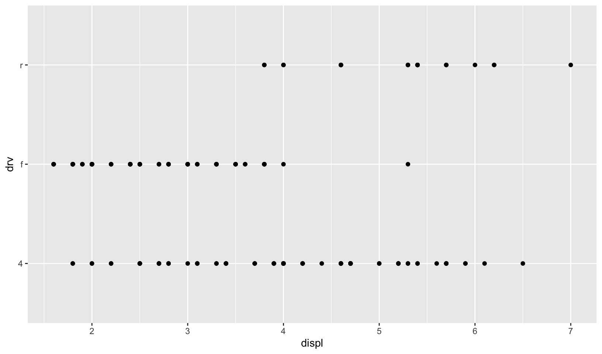
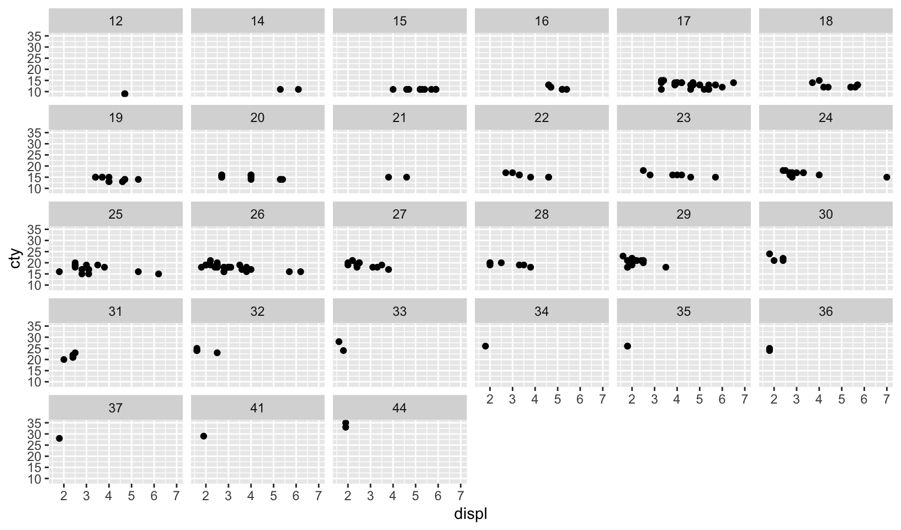
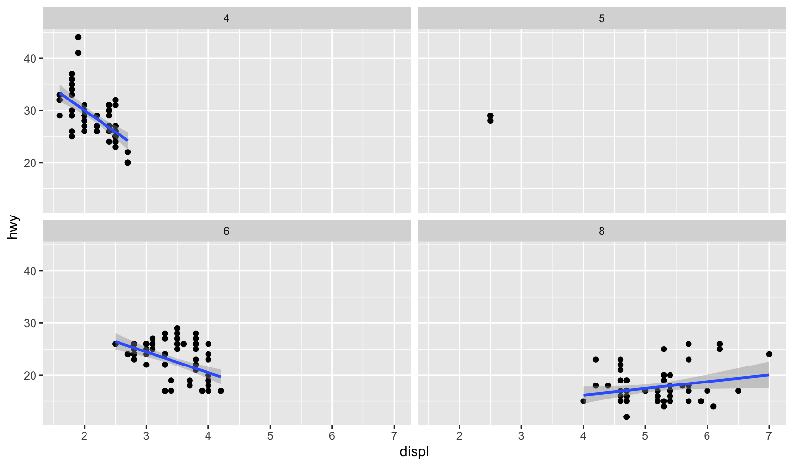
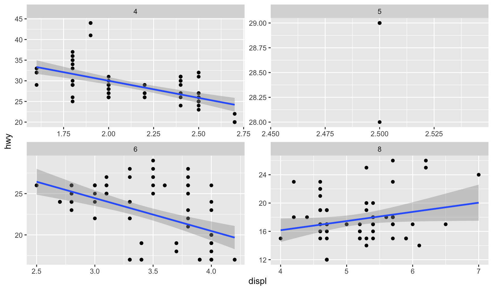
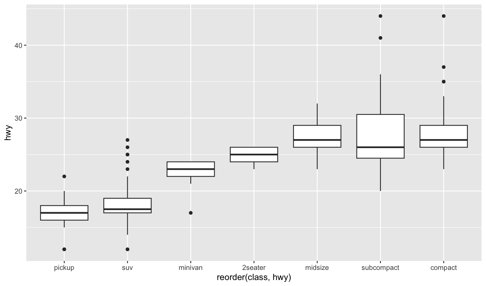
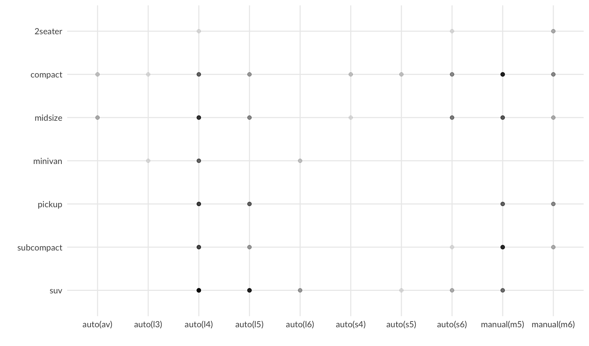
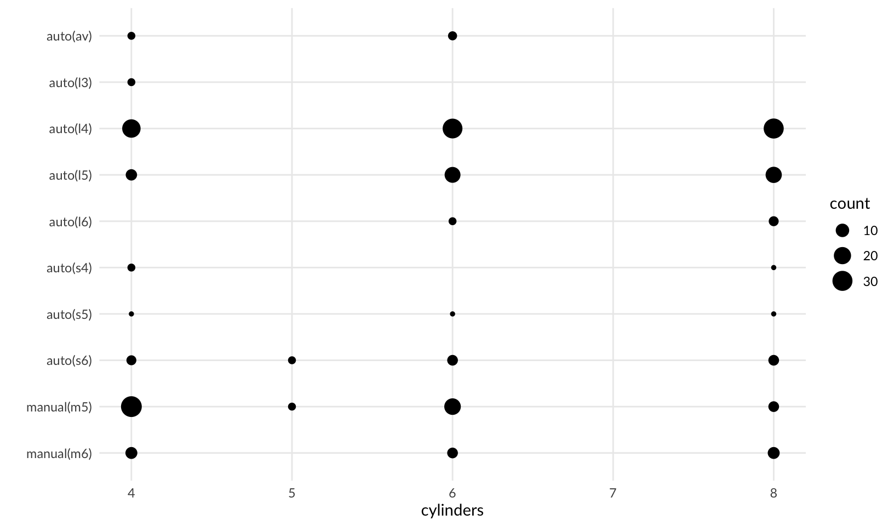

library(ggplot2)
library(dplyr)
library(modelr)
library(jbplot)
knitr::opts_chunk$set(
comment = "#>",
fig.align = "center"
)ggplot2 (Getting started)
exercises
ggplot2
Workbook for completing quizzes and exercises from the “Getting started” chapters of ggplot2: Elegant Graphics for Data Analysis, third edition, with comparisons to solutions from Solutions to ggplot2: Elegant Graphics for Data Analysis.
Introduction
This workbook includes answers and solutions to the quizzes and exercises from ggplot2: Elegant Graphics for Data Analysis and Solutions to ggplot2: Elegant Graphics for Data Analysis, organized by chapter. It includes excerpts from both books, copied here.
WARNING, SPOILERS! If you haven’t read the ggplot2 book and intend to complete the quizzes and exercises, don’t read this notebook. It contains my (potentially wrong) answers to both.
2 First steps
The goal of this chapter is to teach you how to produce useful graphics with ggplot2 as quickly as possible. You’ll learn the basics of ggplot() along with some useful “recipes” to make the most important plots. ggplot() allows you to make complex plots with just a few lines of code because it’s based on a rich underlying theory, the grammar of graphics. Here we’ll skip the theory and focus on the practice, and in later chapters you’ll learn how to use the full expressive power of the grammar.
2.2.1 Exercises
- List five functions that you could use to get more information about the
mpgdataset.
Answer:
Five common base R functions I use to interrogate dataframes are:
summary()hist()plot()lm()View()
GG Solutions:
help(mpg): Documentation of datasetdim(mpg): Dimensions of datasetsummary(mpg): Summary measures of datasetstr(mpg): Display of the internal structure of datasetglimpse(mpg):dplyrversion ofstr(mpg)
- How can you find out what other datasets are included with ggplot2?
Answer: use data(package = "ggplot2"), which returns the following:
Data sets in package ‘ggplot2’:
diamonds Prices of over 50,000 round cut diamonds
economics US economic time series
economics_long US economic time series
faithfuld 2d density estimate of Old Faithful data
luv_colours 'colors()' in Luv space
midwest Midwest demographics
mpg Fuel economy data from 1999 to 2008 for 38 popular models of
cars
msleep An updated and expanded version of the mammals sleep dataset
presidential Terms of 12 presidents from Eisenhower to Trump
seals Vector field of seal movements
txhousing Housing sales in TXGG Solutions:
data(package = "ggplot2") loads the available data sets in ggplot2. Alternatively,if you have internet access, go to https://ggplot2.tidyverse.org/reference/index.html#section-data
- Apart from the US, most countries use fuel consumption (fuel consumed over fixed distance) rather than fuel economy (distance travelled with fixed amount of fuel). How could you convert
ctyandhwyinto the European standard of l/100km?
Answer: to convert miles/gallon to liters/100km, we use the formula:
\(\frac{1}{miles/gallon} \times \frac{3.78541}{1.609344 \div 100} = l/100km\)
mpg_l100km <- function(x) {
(1 / x) * 3.78541 / (1.609344 / 100)
}
mpg |>
mutate(cty = mpg_l100km(cty), hwy = mpg_l100km(hwy))#> # A tibble: 234 × 11
#> manufacturer model displ year cyl trans drv cty hwy fl class
#> <chr> <chr> <dbl> <int> <int> <chr> <chr> <dbl> <dbl> <chr> <chr>
#> 1 audi a4 1.8 1999 4 auto… f 13.1 8.11 p comp…
#> 2 audi a4 1.8 1999 4 manu… f 11.2 8.11 p comp…
#> 3 audi a4 2 2008 4 manu… f 11.8 7.59 p comp…
#> 4 audi a4 2 2008 4 auto… f 11.2 7.84 p comp…
#> 5 audi a4 2.8 1999 6 auto… f 14.7 9.05 p comp…
#> 6 audi a4 2.8 1999 6 manu… f 13.1 9.05 p comp…
#> 7 audi a4 3.1 2008 6 auto… f 13.1 8.71 p comp…
#> 8 audi a4 quattro 1.8 1999 4 manu… 4 13.1 9.05 p comp…
#> 9 audi a4 quattro 1.8 1999 4 auto… 4 14.7 9.41 p comp…
#> 10 audi a4 quattro 2 2008 4 manu… 4 11.8 8.40 p comp…
#> # ℹ 224 more rowsGG Solutions:
According to asknumbers, you divide 235.214583 by the mpg values in
ctyandhwyto convert them into the European standard of l/100km.Function to convert into European standard (Rademaker, 2016):
mpgTol100km <- function(milespergallon) {
GalloLiter <- 3.785411784
MileKilometer <- 1.609344
l100km <- (100 * GalloLiter) / (milespergallon * MileKilometer)
l100km
}- Which manufacturer has the most models in this dataset? Which model has the most variations? Does your answer change if you remove the redundant specification of drive train (e.g. “pathfinder 4wd”, “a4 quattro”) from the model name?
Answer: we can generate a dataframe with manufacturers, models, and variations using:
mpg_summary <- mpg |>
count(manufacturer, model) |>
rename(variations = n)
mpg_summary#> # A tibble: 38 × 3
#> manufacturer model variations
#> <chr> <chr> <int>
#> 1 audi a4 7
#> 2 audi a4 quattro 8
#> 3 audi a6 quattro 3
#> 4 chevrolet c1500 suburban 2wd 5
#> 5 chevrolet corvette 5
#> 6 chevrolet k1500 tahoe 4wd 4
#> 7 chevrolet malibu 5
#> 8 dodge caravan 2wd 11
#> 9 dodge dakota pickup 4wd 9
#> 10 dodge durango 4wd 7
#> # ℹ 28 more rowsThe model with the most variations is the Dodge Caravan 2wd.
mpg_summary |>
arrange(variations) |>
tail(1)#> # A tibble: 1 × 3
#> manufacturer model variations
#> <chr> <chr> <int>
#> 1 dodge caravan 2wd 11The manufacturer with the most models is Toyota.
mpg_summary |>
count(manufacturer) |>
arrange(n) |>
tail(1)#> # A tibble: 1 × 2
#> manufacturer n
#> <chr> <int>
#> 1 toyota 6If we first remove the redundant drive train from the summary, we get:
mpg_summary2 <- mpg |>
mutate(model = gsub(" (quattro)|(2wd)|(4wd)|(awd)$", "", model)) |>
count(manufacturer, model) |>
rename(variations = n)
mpg_summary2#> # A tibble: 37 × 3
#> manufacturer model variations
#> <chr> <chr> <int>
#> 1 audi "a4" 15
#> 2 audi "a6" 3
#> 3 chevrolet "c1500 suburban " 5
#> 4 chevrolet "corvette" 5
#> 5 chevrolet "k1500 tahoe " 4
#> 6 chevrolet "malibu" 5
#> 7 dodge "caravan " 11
#> 8 dodge "dakota pickup " 9
#> 9 dodge "durango " 7
#> 10 dodge "ram 1500 pickup " 10
#> # ℹ 27 more rowsThe model with the most variations has changed to the Audi A4.
mpg_summary2 |>
arrange(variations) |>
tail(1)#> # A tibble: 1 × 3
#> manufacturer model variations
#> <chr> <chr> <int>
#> 1 audi a4 15The manufacturer with the most models is still Toyota.
mpg_summary2 |>
count(manufacturer) |>
arrange(n) |>
tail(1)#> # A tibble: 1 × 2
#> manufacturer n
#> <chr> <int>
#> 1 toyota 6GG Solutions:
Not included here because I believe the answer to question 4 in 2.2 Exercises is incorrect, as it counts variants by manufacturer, not models by manufacturer.
2.3.1 Exercises
- How would you describe the relationship between
ctyandhwy? Do you have any concerns about drawing conclusions from that plot?
Answer: we can explore the relationship using a scatterplot:
ggplot(mpg, aes(cty, hwy)) +
geom_point()
There is a strong correlation between cty and hwy, which is expected since these are both measures of fuel efficiency of the same car.
GG Solutions:
- The plot shows a strongly linear relationship, which tells me that
ctyandhwyare highly correlated variables. The only concern I have is that the points seem to be overlapping. - There is not much insight to be gained except that cars which are fuel efficient on a highway are also fuel efficient in cities. This relationship is probably a function of speed (Rademaker, 2016)
- What does
ggplot(mpg, aes(model, manufacturer)) + geom_point()show? Is it useful? How could you modify the data to make it more informative?
Answer: this plot shows each model as a point for each manufacturer, which is not particularly useful, although it does allow for a quick count of models by manufacturer. A bar chart showing count of models by manufacturer would be more useful.
ggplot(mpg, aes(model, manufacturer)) +
geom_point()GG Solutions:
- The plot shows the manufacturer of each model. Its not very readable since there are too many models and this clutters up the x-axis with too many ticks! I would just plot 20 or so models so that the graph is more readable. See below:
mpg %>%
head(25) %>%
ggplot(aes(model, manufacturer)) +
geom_point()- A possible alternative would be to look total number of observations for each manufacturer-model combination using geom_bar(). (Rademaker, 2016)
df <- mpg %>%
transmute("man_mod" = paste(manufacturer, model, sep = " ")) # nolint: keyword_quote_linter.
ggplot(df, aes(man_mod)) +
geom_bar() +
coord_flip()Note: I prefer my solution for this exercise.
Describe the data, aesthetic mappings and layers used for each of the following plots. You’ll need to guess a little because you haven’t seen all the datasets and functions yet, but use your common sense! See if you can predict what the plot will look like before running the code.
ggplot(mpg, aes(cty, hwy)) + geom_point()ggplot(diamonds, aes(carat, price)) + geom_point()ggplot(economics, aes(date, unemploy)) + geom_line()ggplot(mpg, aes(cty)) + geom_histogram()
Answer:
ggplot(mpg, aes(cty, hwy)) + geom_point()- scatterplot of city mpg against highway mpgggplot(diamonds, aes(carat, price)) + geom_point()- scatterplot of diamond weight in carats against priceggplot(economics, aes(date, unemploy)) + geom_line()- a line plot showing the unemployment rate over timeggplot(mpg, aes(cty)) + geom_histogram()- a histogram of city mpg
ggplot(mpg, aes(cty, hwy)) +
geom_point()ggplot(diamonds, aes(carat, price)) +
geom_point()
ggplot(economics, aes(date, unemploy)) +
geom_line()
ggplot(mpg, aes(cty)) +
geom_histogram()#> `stat_bin()` using `bins = 30`. Pick better value with `binwidth`.In general, my guesses are correct (given my existing experience with ggplot), except for the economics plot, which appears to show the number of unemployed people instead of an employment rate.
GG Solutions: (Rademaker, 2016)
ggplot(mpg, aes(cty, hwy)) + geom_point()
- Data:
mpg - Aesthetic: highway miles per gallon is mapped to y position and city miles per gallon is mapped to x position.
- Layer: points
ggplot(diamonds, aes(carat, price)) + geom_point()
- Data:
diamonds - Aesthetic: price in US dollars is mapped to y position, weight of the diamond is mapped to x position.
- Layer: points
ggplot(economics, aes(date, unemploy)) + geom_line()
- Data:
economics - Aesthetic: median duration of unemployment, in weeks, is mapped to y position and month of data collection is mapped to x position.
- Layer: line
2.4.1 Exercises
- Experiment with the colour, shape and size aesthetics. What happens when you map them to continuous values? What about categorical values? What happens when you use more than one aesthetic in a plot?
Answer: observations based on the plots below:
- Using a continuous variable with shape generates an error
- Using a categorical variable with shape for more than 6 values generates a warning
- Using a continuous variable with size works well
- Using a categorical variable with size generates a warning
- Using a continuous variable with color creates a gradient
- Using a categorical variable with color creates a discrete mapping
- Multiple aesthetics can overload the plot
# continuous
ggplot(mpg, aes(displ, hwy, color = cyl)) +
geom_point()# categorical
ggplot(mpg, aes(displ, hwy, color = drv)) +
geom_point()
# multiple
mpg |>
mutate(year = as.factor(year)) |>
ggplot(aes(displ, hwy, color = drv, size = cyl, shape = year)) +
geom_point()GG Solutions offers a similar and less complete answer.
- What happens if you map a continuous variable to shape? Why? What happens if you map
transto shape? Why?
Answer: As noted above, using a continuous variable with shape generates an error, because plots must have discrete shapes. Using a categorical variable with shape for more than 6 values (like trans) generates a warning, since (as the error notes) many different shapes can be hard to distinguish on a plot.
GG Solutions presents a similar answer.
- How is drive train related to fuel economy? How is drive train related to engine size and class?
Answer: The plots below show that:
- Front wheel drive is correlated with higher fuel economy
- Front wheel drive is correlated with smaller displacement, rear wheel drive is correlated with larger displacement, and four wheel drive is not correlated with displacement
- Some classes only have a single drive train:
- Two seaters only have rear wheel drive
- Minivans only have front wheel drive
- Pickups only have four wheel drive
ggplot(mpg, aes(hwy, drv)) +
geom_point()
ggplot(mpg, aes(displ, drv)) +
geom_point()
ggplot(mpg, aes(class, drv)) +
geom_point()GG Solutions presents a similar answer using bar charts, and compares engine size and class together in a single plot.
Note: GG Solutions does not explore the relationship between drive train and class.
2.5.1 Exercises
- What happens if you try to facet by a continuous variable like
hwy? What aboutcyl? What’s the key difference?
Answer: faceting on a continuous variable creates a facet for each unique value in the data frame, which holds true for both hwy and cyl. The key difference is that cyl has fewer unique values, making the plot more readable and useful.
ggplot(mpg, aes(displ, cty)) +
geom_point() +
facet_wrap(vars(hwy))
ggplot(mpg, aes(displ, cty)) +
geom_point() +
facet_wrap(vars(cyl))GG Solutions:
- The key difference is
hwyis a continuous variable that has 27 unique values, so you get 27 different subsets. However,clyis a categorical variable and has 4 unique values, socylonly has 4 different subsets. It is less cluttered when you try to facet. - (Rademaker, 2016) Faceting by a continuous variable works but becomes hard to read and interpret when the variable that we facet by has too many levels.
- Use faceting to explore the 3-way relationship between fuel economy, engine size, and number of cylinders. How does faceting by number of cylinders change your assessment of the relationship between engine size and fuel economy?
Answer: engines with fewer cylinders have a stronger relationship between displacement and fuel economy (where larger engines have poorer fuel economy), strongest with 4 cylinders, unclear with 5 (due to limited data), weaker with 6, and no apparent relationship with 8.
ggplot(mpg, aes(displ, hwy)) +
geom_point() +
geom_smooth(method = "lm", formula = y ~ x) +
facet_wrap(vars(cyl))
GG Solutions:
- When I initially plot engine size and fuel economy, I see an overall decreasing linear relationship. Upon faceting, I see that the decreasing relationship is mostly seen in the 4 cylinder subset. In the other cylinder subsets, we see a flat relationship - as engine displacement increases, fuel economy remains constant.
- Read the documentation for
facet_wrap(). What arguments can you use to control how many rows and columns appear in the output?
Answer: use nrow and ncol.
GG Solutions:
- I can use the arguments
nrow, ncolto control how many rows and columns appear in the output.
- What does the
scalesargument tofacet_wrap()do? When might you use it?
Answer: the scales argument determines whether scales are fixed (the default) or free on one or both dimensions. Using scales = "free" is helpful when comparing relationships when scale is less important, as shown in this reworked example of exercise 2, which focuses on the smoothed plot:
ggplot(mpg, aes(displ, hwy)) +
geom_point() +
geom_smooth(method = "lm", formula = y ~ x) +
facet_wrap(vars(cyl), scales = "free")
GG Solutions:
- It allows users to decide whether scales should be fixed. I would use it whenever different subsets of the data are on vastly different scales.
- (Rademaker, 2016) If we want to compare across facets,
scales = "fixed"is more appropriate. If our focus is on individual patterns within each facet, settingscales = "free"might be more appropriate.
2.6.6 Exercises
- What’s the problem with the plot created by
ggplot(mpg, aes(cty, hwy)) + geom_point()? Which of the geoms described above is most effective at remedying the problem?
Answer: as noted in GG Solutions, the problem is overplotting, which geom_jitter fixes:
ggplot(mpg, aes(cty, hwy)) +
geom_point() +
geom_jitter()GG Solutions:
- The problem is overplotting.
Solution 1. Use geom_jitter to add random noise to the data and avoid overplotting.
Solution 2. (Rademaker, 2016) Set opacity with alpha
One challenge with
ggplot(mpg, aes(class, hwy)) + geom_boxplot()is that the ordering ofclassis alphabetical, which is not terribly useful. How could you change the factor levels to be more informative?Rather than reordering the factor by hand, you can do it automatically based on the data:
ggplot(mpg, aes(reorder(class, hwy), hwy)) + geom_boxplot(). What doesreorder()do? Read the documentation.
Answer: as noted in the exercise, ordering of class by hwy is more informative. reorder() reorders levels based on the second, numeric value, by default using the mean.
ggplot(mpg, aes(class, hwy)) +
geom_boxplot()
ggplot(mpg, aes(reorder(class, hwy), hwy)) +
geom_boxplot()
GG Solutions takes a similar approach but instead uses mutate(class = factor(class), class = fct_reorder(class, hwy)).
- Explore the distribution of the carat variable in the
diamondsdataset. Whatbinwidthreveals the most interesting patterns?
Answer: using trial and error, binwidth = 0.01 reveals that carat weight is skewed towards round numbers (1, 1.25, 1.5, 2, etc.). Using the smaller binwidth = 0.005 doesn’t improve the pattern, and makes it harder to see.
ggplot(diamonds, aes(carat)) +
geom_histogram(binwidth = 0.1)
ggplot(diamonds, aes(carat)) +
geom_histogram(binwidth = 0.01)ggplot(diamonds, aes(carat)) +
geom_histogram(binwidth = 0.005)GG Solutions:
- This is a subjective answer, but
binwidthof 0.2 or 0.3 reveals that the distribution of carat is heavily skewed to the right. This means that most diamonds carats are between 0 and 1.
- Explore the distribution of the price variable in the
diamondsdata. How does the distribution vary by cut?
Answer: a boxplot of price by cut shows that better cuts aren’t necessarily more expensive.
However, as noted in my R Training Log:
7.6 Patterns and models covers models and residuals, here showing how to reveal the expected relationship between cut and price:
We can remove the relationship between carats and price, and redo the boxplot:
ggplot(diamonds, aes(cut, price)) +
geom_boxplot()
# remove carat weight as a confounding variable
mod <- lm(log(price) ~ log(carat), data = diamonds)
diamonds2 <- diamonds |>
add_residuals(mod) |>
mutate(resid = exp(resid))
ggplot(data = diamonds2) +
geom_boxplot(mapping = aes(x = cut, y = resid))GG Solutions uses both a boxplot and a frequency polygon to compare cuts, and concludes:
- (Rademaker, 2016) Fair quality diamonds are more expensive then others. Possible reason is they are bigger.
- You now know (at least) three ways to compare the distributions of subgroups:
geom_violin(),geom_freqpoly()and the colour aesthetic, orgeom_histogram()and faceting. What are the strengths and weaknesses of each approach? What other approaches could you try?
Answer: Violin plots convey the most information but require an understanding of probability density. Frequency polygons allow for direct comparison on the same plot - in contrast, faceted histograms provide a better visualization of each variable, but make comparison more difficult. Other approaches include comparing boxplots, multiple density plots, or side-by-side histograms - a bar plot showing multiple variables for each bin.
GG Solutions:
- According to the book,
geom_violin()shows a compact representation of the “density” of the distribution, highlighting the areas where more points are found. Its weakness is that violin plots rely on the calculation of a density estimate, which is hard to interpret. - According to the book,
geom_freqploy()bins the data, then counts the number of observations in each bin using lines. One possible weakness is that you have to select the width of the bins yourself by experimentation. - According to the book,
geom_histogram()and faceting makes it easier to see the distribution of each group, but makes comparisons between groups a little harder.
- Read the documentation for
geom_bar(). What does theweightaesthetic do?
Answer: for geom_bar(), the weight aesthetic changes the height of the bar from the number of cases in each group to the sum of the weights.
GG Solutions:
- The
weightaesthetic converts the number of cases to a weight and makes the height of the bar proportional to the sum of the weights. See below:
g <- ggplot(mpg, aes(class))
# Number of cars in each class:
g + geom_bar()# Total engine displacement of each class
g + geom_bar(aes(weight = displ))- Using the techniques already discussed in this chapter, come up with three ways to visualise a 2d categorical distribution. Try them out by visualising the distribution of
modelandmanufacturer,transandclass, andcylandtrans.
Answer: three ways to visualize categorical distributions:
- Bar charts
- A scatterplot using alpha
- A scatterplot using size
mpg[c("manufacturer", "model")] |>
unique() |>
ggplot(aes(manufacturer)) +
geom_bar(color = "black", fill = "white", width = 0.8) +
coord_flip() +
scale_x_discrete(limits = rev) +
labs(x = "", y = "models") +
theme_quo()mpg |>
ggplot(aes(trans, class)) +
geom_point(alpha = 0.1) +
scale_y_discrete(limits = rev) +
labs(x = "", y = "") +
theme_quo()
mpg |>
count(trans, cyl) |>
ggplot(aes(cyl, trans, size = n)) +
geom_point() +
scale_y_discrete(limits = rev) +
labs(x = "cylinders", y = "", size = "count") +
theme_quo(minor.x = FALSE)
GG Solutions does not provide an answer.